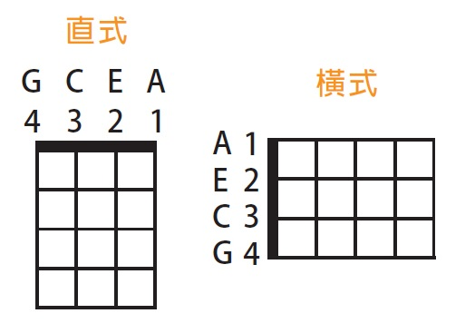
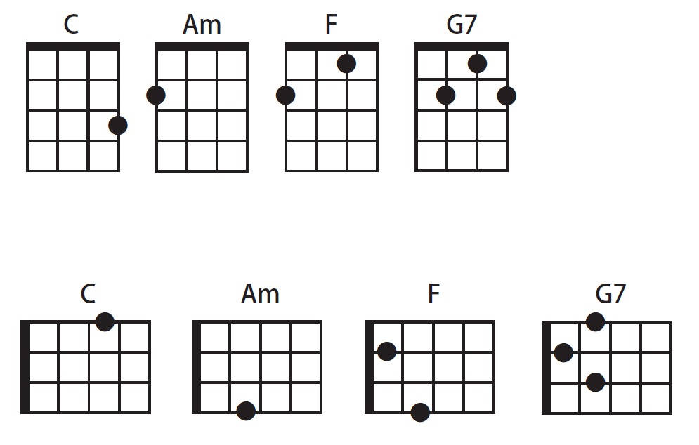
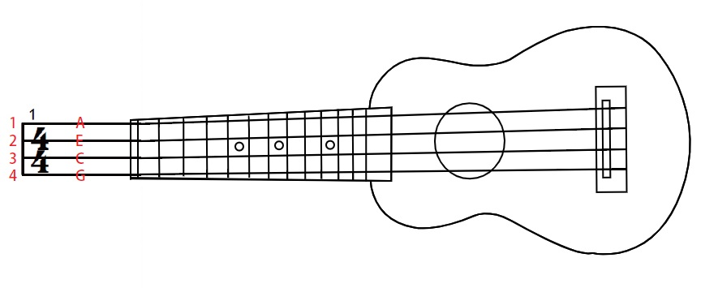
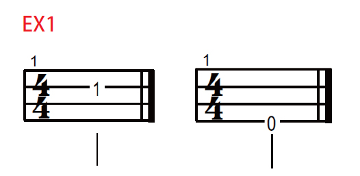
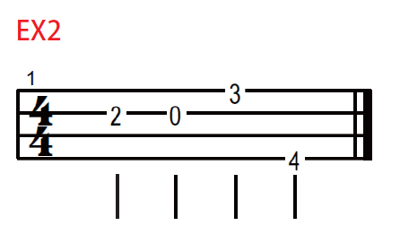
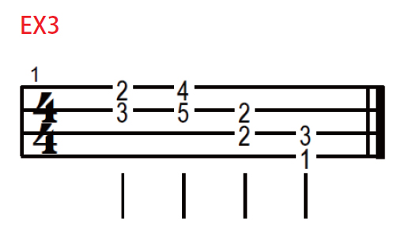
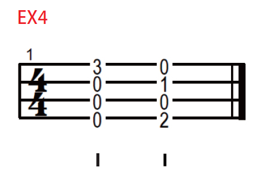
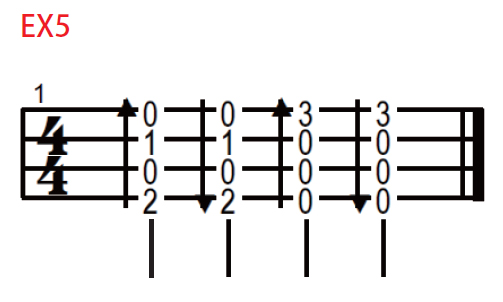
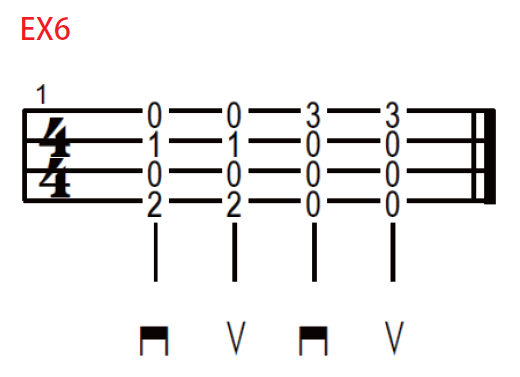

和弦圖
和弦圖有直的也有橫的
其實它就是烏克麗麗的指板

直式 就是把烏克麗麗面對自己拿直的樣子
由右而左 1A 2E 3C 4G
由上到下 一 二 三 格
橫式 就是把烏克麗麗面對自己拿橫的樣子
由上到下 1A 2E 3C 4G
由左而右 一 二 三 格
通常由左手來按和弦
第一格食指負責
第二格中指負責
第三格無名指負責
國際四和弦
C Am F G7
會這四個就可以彈很多歌囉

和弦圖上方的英文是和弦名稱
黑點點是要按的位置
- C
無名指 按第一弦第三格 - Am
中指 按第四弦第二格 - F
食指 按第二弦第一格
中指 按第四弦第二格 - G7
食指 按第二弦第一格
中指 按第三弦第二格
無名指 按第一弦第二格
四線譜 TAB (Tablature)
它其實也是烏克麗麗的指板
把烏克麗麗面向自己就和 TAB 一樣了

由上而下 1A 2E 3C 4G
TAB 上的數字就是我們要按的格數
通常由右手撥弦
1. 練習一 - 按弦與撥弦位置

左邊 TAB 在第二弦上有個 1
代表要按第二弦的第一格
第一格通常由食指負責
所以就是左手食指按住第二弦第一格，右手彈第二弦
右邊 TAB 在第四弦有個 0
代表空弦音不用按
所以只需要用右手彈第四弦即可
2. 練習二 - 彈奏順序

TAB 上有四個數字
彈奏的順序是由左而右
第一個是按第二弦的第二格，右手彈第二弦
第二個是第二弦的空弦音，右手彈第二弦
第三個按第一弦第三格，右手彈第一弦
第四個案第四弦第四格，右手彈第四弦
3. 練習三 - 同時彈奏

第一個: 同時按第一弦第二格和第二弦第三格，右手撥第一二弦
第二個: 同時按第一弦第四格和第二弦第五個，右手撥第一二弦
第三個: 同時按第二弦第二格和第三弦第二格，右手撥第二三弦
第四個: 同時按第三弦第三格和第四弦第一格，右手撥第三四弦
4. 練習四 - 和弦

有一整排的數字要同時彈奏時
通常就是和弦
- 第一個 (C 和弦)
按第一弦第三格，二三四弦都空弦音，右手四條刷下去 - 第二個 (F 和弦)
按第二弦第一格和第四弦第二格，一三弦空弦音，右手四條刷下去
5. 練習五 - 箭頭方向

箭頭就是指刷的方向
它有四個箭頭 上下上下
但箭頭往上不代表手要往上刷
因為四線譜是把烏克麗麗面對自己的樣子
試試看把有響孔那面轉過來面對自己，然後往上刷
接著把響孔轉回去對外，就變成往下刷了
所以手的方向跟譜是相反的
- 第一個
左手按 F 和弦，右手往下刷 - 第二個
左手按 F 和弦，右手往上刷 - 第三個
左手按 C 和弦，右手往下刷 - 第四個
左手按 C 和弦，右手往上刷
6. 練習六 - ㄇ 與 V

這兩個符號也是指刷的方向
ㄇ 是往下刷
V 是往上刷
所以 練習六 跟 練習五 彈起來是一樣的
左手按 F 跟 C 和弦
右手刷 下上下上